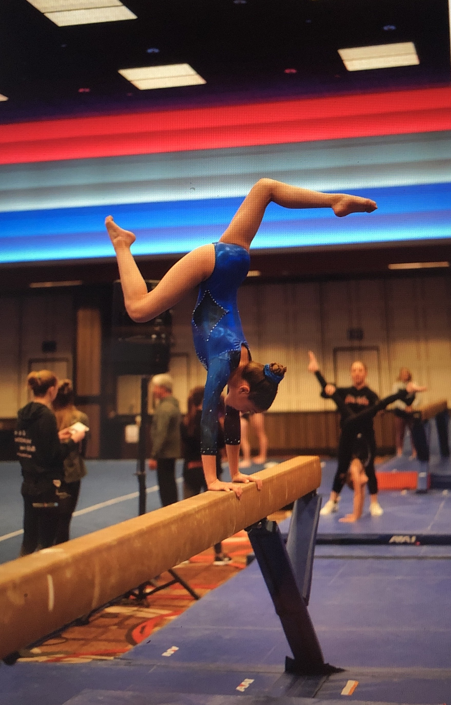
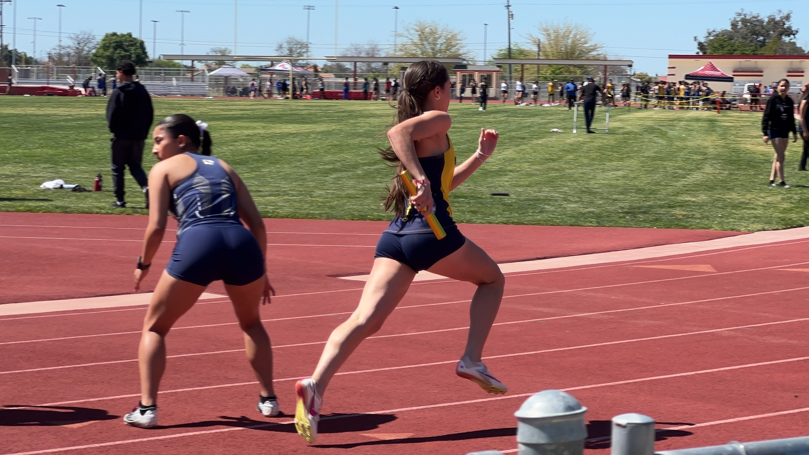
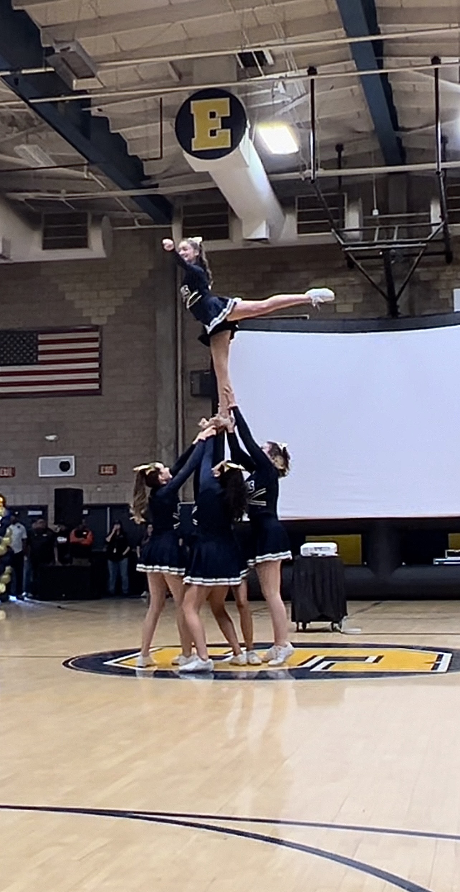
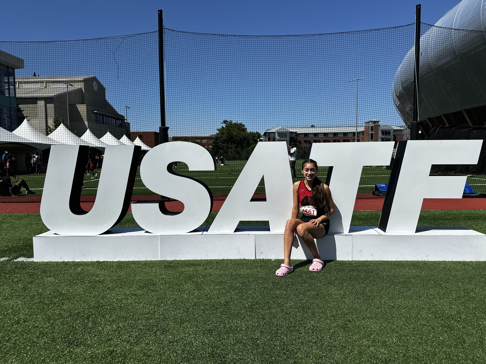
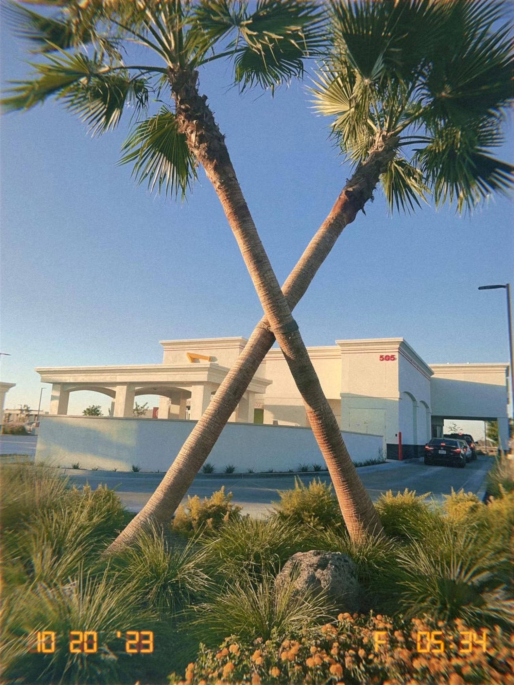
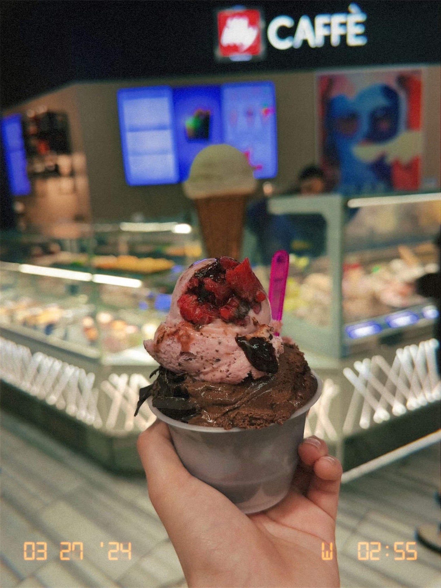
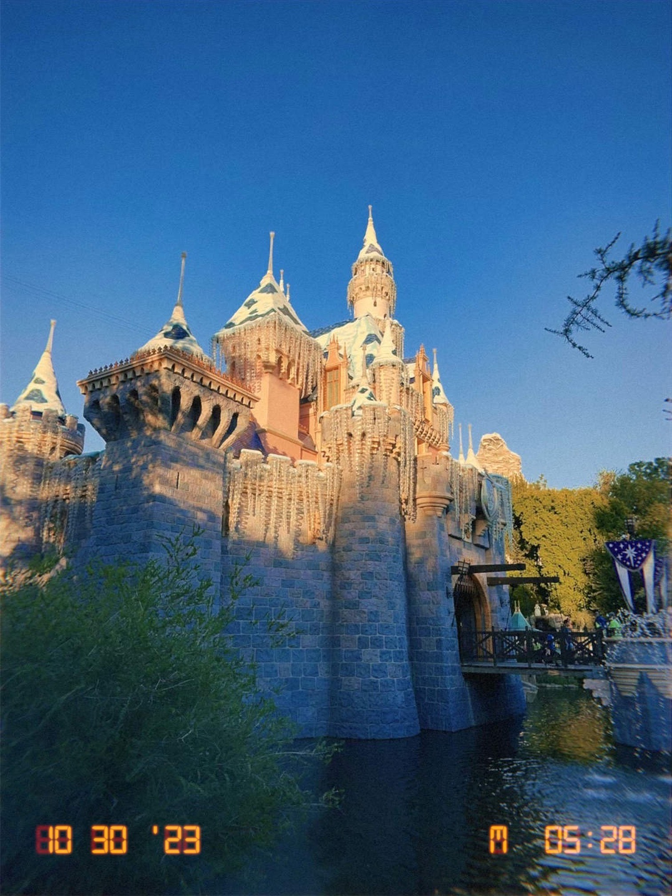
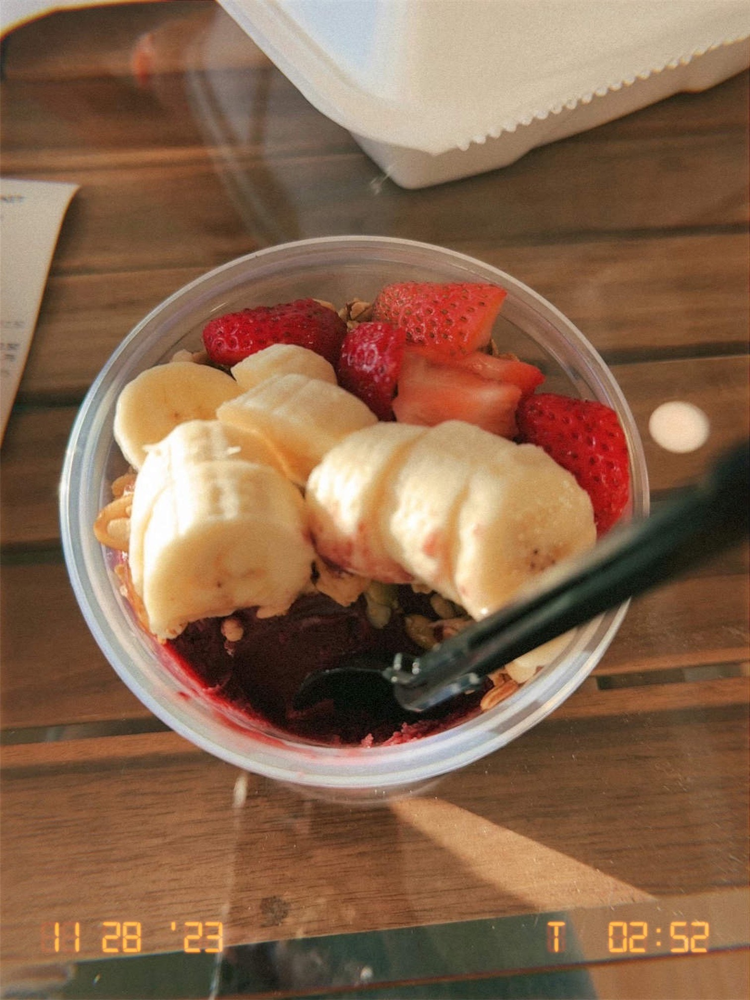

I am a senior here at Shafter High and have been a cheerleader for all 4 years, and will also join track and field for my 4th year in Spring. I have 1 brother and 5 pets. I was also a competitive gymnast for 8 years.




My favorite things are ice cream, chocolate, lots of snacks, Starbucks, In N Out, and milkshakes. Other than food I love watching movies, listening to music, binge watching Marvel movies and Outer Banks, baking, traveling, and going to Disneyland.




For now I am planning on going to Bakersfield College to complete my GenEd, and then think more about transfering to a UC or CSU. I am intersted in the field of kinesiology, but I'm not completely sure what position exactly I would like.
Colleges other than BC that I am interested in are University of California, Santa Barbara, Cal Poly San Luis Obispo, and University of Nevada, Las Vegas.